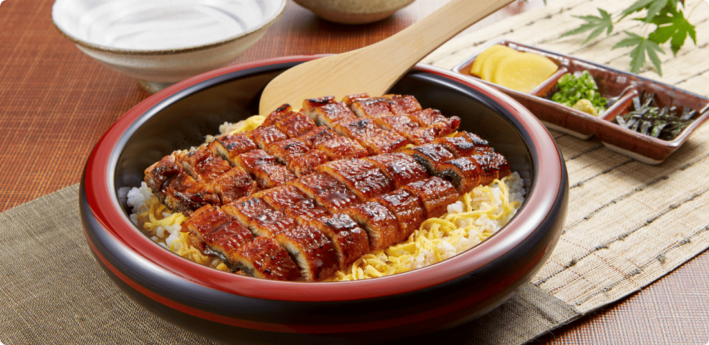
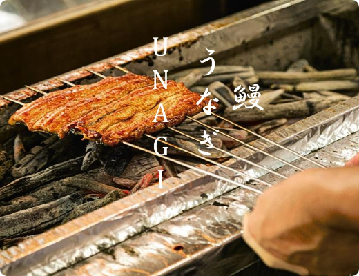

Hitsumabushi
Hitsumabushi is the crown jewel of Nagoya’s gourmet scene. It is a premium grilled eel (Unagi) dish served over rice in a distinctive round wooden tub called an Ohitsu. Unlike standard eel bowls, the eel here is finely chopped to make it easier to mix. The defining feature of this dish is the ceremonial “four-step ritual” of eating, allowing diners to enjoy the eel's flavor transformation from rich and smoky to light and refreshing within a single meal.
Key Highlights
- • Kansai-style Grilling: The eel is grilled over charcoal without steaming first (unlike in Tokyo), resulting in crispy skin, firm flesh, and a fragrant smokiness, finished with a secret savory glaze (tare).
- • The Ritual: It offers a culinary journey: savoring it plain, enhancing it with aromatics, and finally transforming it into a tea-soup dish.
- • Why Try It: It is not just a meal but a cultural experience. The third step (adding dashi broth) creates a sublime balance between the fatty eel and the delicate stock.

How to Experience
Eating Style: Use the wooden spoon to divide the rice in the tub into four portions.
- First portion: Eat it as is to taste the authentic grilled eel.
- Second portion: Mix in condiments (green onions, wasabi, and dried seaweed).
- Third portion: Pour the provided dashi stock (or tea) over it to eat as Ochazuke.
- Fourth portion: Repeat your favorite method from the previous three.
Practical Info
Best Time: A luxurious lunch or a celebratory dinner. Reservations are highly recommended.
Price Range: High-end; 3,500 – 5,000+ JPY.